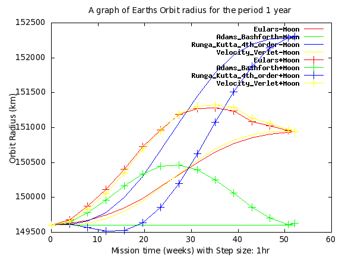
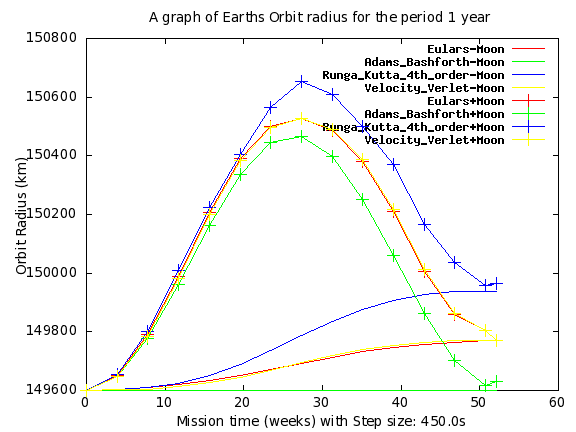
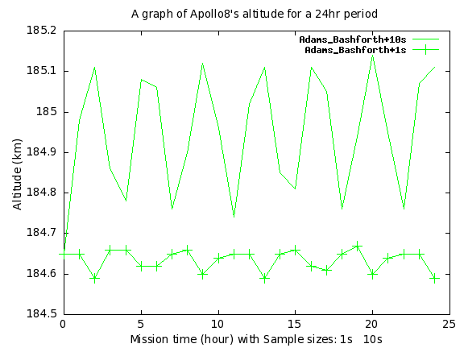

Celestial Mechanics
The Apollo 8, the 1st manned spacecraft to orbit the Moon.
October 2022 - Neville Dempsey
In December 1968 the Apollo 8 Spacecraft was the second of the manned missions of Project Apollo, and the 1st Apollo spacecraft to be put in orbit around the Moon. This software project showcases various Numerical Methods used for solving various gravitational problems, and so also can calculate the path of any celestial body, including a spacecraft.
The problem is principally a Second Order differential equation of the form :
m . d²r/dt²= G . Mm/r²
Where G is the Universal Gravitational Constant, M & m are the masses of two different objects, and r is the distance between two objects.
Four different ODE solving techniques (“Euler's”, “Adams-Bashforth's”, “Runga-Kutta 4th order” and “Velocity Verlet”) are tested for stability and accuracy of various orbits of the Sun, Earth & Moon system.
At the same time (and to add to the authenticity) a 3GL language of the era (called ALGOL 68) will be used to develop a celestial mechanics software platform. Adopting a 3GL will highlight the issues arising when a real-time celestial body is used within a real rocket navigation & guidance system. Indeed such an Algol system was deployed in the Soviet Buran Spacecraft landing system. In this case, the unmanned Buran Spacecraft landed just meters from the desired touchdown.
The actual Apollo 8 mission followed several stages, including Launch; on December 21 1968 07:51:00 am, Earth orbit insertion, Trans-lunar injection; Lunar orbit insertion; Trans-Earth injection, and finally splashdown;
The initial idea was to use real data from the actual launch to get the rocket into orbit, then once in orbit calculate a trajectory to leave Earth orbit, sling shoot off the Moon, and reenter Earth orbit. However, before this can be achieved, a working Celestial model must be available.
Indeed getting the initial values for a Celestial Model, especially for December 21 1968 would have been another project. To simplify testing of this “proof of concept” Celestial model I will use circular orbits, in only the X&Y plane, starting with a Y value for all Celestial Bodies & Crafts of zero.
Other issues include consideration regarding the complexity of providing this platform to NASA staff. Issues arise such as:
Accuracy of calculations versus accuracy of measurement using the technology available:
All stages of flight would have these issues, some more so than others.
eg. Launch phase: Atmospheric conditions.
Rocket booster performance and air resistance
Rocket guidance.
Earth Orbit injection
position/orientation accuracy and
rocket thrust/orientation.
Software complexity for generating the
Demonstrate that the basic ODE model works with Sun, Earth & Moon systems orbiting each other for one solar year. This provides a crude check as - in a simple model - both conservations of energy and mass apply.
The model is a 2nd-Order ODE and the "Euler method", "Adams-Bashforth method", “Runga-Kutta 4th Order method” and “Velocity Verlet” methods are compared.
The are many phases that the Apollo8 flight follows: Launch, Earth parking orbit, Trans-lunar injection, Spacecraft S-IVB separation, First mid-course correction (SPS/RCS), Second mid-course correction (RCS), Lunar orbit insertion (SPS), Lunar orbit circulation (SPS), Trans-Earth injection (SPS), Third mid-course correction (RCS), Command module/service module separation, Entry, Landing.
I am simply going to model the Apollo 8 Command module “parked” in Earth orbit. And use this to review the accuracy of the various ODE methods.
We will assume that the Sun, Earth, and the Moon are in the same plane, the X-Y plane. This simplifies the calculation by making the boundary 1-dimensional. (Later this may make a simple position to calculate the appropriate trajectory to leave Earth Orbit to the Moon).
Initial conditions/velocities are calculated based on the assumption that Earth is in an orbit of exactly a circle and exactly one mean solar year.
Similarly, the Moon is assumed to orbit in a circle in exactly a “sidereal month” (27.321661 days)
We will assume there are negligible effects from other forces. The forces excluded from the calculations include:
Solar wind
Light Pressure
Magnetic fields.
Gravitational effects from other celestial bodies.
Special and General Relativity.
Given that it is a distraction from testing the numerical methods, I also elected not to use NASA's orbital elements to place the Earth and Moon in true 3-dimensional (near elliptic) orbits
This has the benefit that one can test that the orbits of a simple 2-body system (eg. Sun and Earth) do indeed follow circular orbits, and use this to calibrate/validate the Numerical Method for creating the Celestial Model.
The gravitational attraction of any two bodies is governed by Newton's law of universal gravitation:
Gravitation Force = Fᵢ = Fⱼ = G mᵢ mⱼ / r²
Where:
F is the force between the masses,
G is the gravitation constant: 6.674×10⁻¹¹N m² kg⁻²
mᵢ is the first mass,
mⱼ is the second mass, and
r is the distance between the centers of the masses.
The actual acceleration of a particular object is proportional to its mass and the sum of the gravitation pull of objects around it. In essence, it is governed by ”Newton's laws of motion,” specifically:
Fᵢ = mᵢ.aᵢ
Where:
Fᵢ is the force being acted on the object
mᵢ is the mass of the object
aᵢ is the resulting acceleration of the object
Hence by summing the forces with we get:
aᵢ = Σⱼ G mⱼ / rⱼi²
Where aᵢ is the acceleration, and mⱼ are the other masses involved. And rⱼi is the distance between any two masses.
Fg = G × mi × mj × r-2 - - - {Eqn: Fg} ∴ Fi = mi × ai - - - {Eqn: Fi} ∴ ai = G × mi × mj × r-2× mi-1 Or simply: aij = G × mj × rij-2 - - - {Eqn: aij} Or for all bodies: ai = Σj G × mj × rij-2 - - - {Eqn: ai}
In code – and in a 3+ body system - we need to sum the vector acceleration components of other objects in the system, this becomes:
FOR i TO upb objects DO
distance i := get distance(i);
FOR j FROM i + 1 TO upb objects DO
separation := distance i - ref distance(j);
REAL radius = NORM separation;
REAL radius squared = radius*radius;
VEC unit vector from i to j = separation / radius;
REAL g over radius squared = mksa gravitational constant /
radius squared;
ref acceleration(i) +:= (mass OF master)[j] *
g over radius squared * -unit vector from i to j;
ref acceleration(j) +:= (mass OF master)[i] *
g over radius squared * +unit vector from i to j
OD
OD;
# At this point the acceleration is returned ... #On “average” Earth travels in its orbit as follows:
Mean orbit radius of Earth = 150x10⁶ km
Mean orbit period Earth = 365.2421897 days1
We can use this information to calculate an orbit that should result in an orbital period of exactly one mean solar year. The important equation here is the equation used to calculate the altitude (or period (λ) of orbit to “inject” a spacecraft (or a celestial body for that matter), into a stable circular orbit of a 2-body system:
λ = 2π x √[ rij3 / (G × (mi + mj)) ] {Eqn: λ} vi = 2π ri / λ {Eqn: velocity} This translates to this simple piece of code: (injection radius := (mksa gravitational constant * (mass OF mean OF parent OF self + mass OF mean OF self)* (orbit period OF mean OF self/2/pi)**2) ** (1/3)
This gives us the following initial conditions:
IIVP Order-2: solar system: t interval: [ 0.0 … 3.15569252522e7] (in seconds) y₀ = ( 0.0, 0.0, 1.4960146948e11, 0.0, 1.4981582442e11, 0.0, 1.4960803223e11, 0.0) dy₀/dt = ( 0.0, 0.0, 0.0, 2.97866078294e4, 0.0, 3.03571562823e4, 0.0, 3.29307012406e4) Calculated initial conditions {using Eqn: ai}: d²y₀/dt² = ( 3.1171634677e-9, 0.0,-5.8239912075e-3, 0.0, -7.3256607239e-3, 0.0,-1.51209423294e0, 0.0) Note that the figure (near or about) 1.4960146948 x 10^11 appears in these equations many times. This figure is “meters” and is near to one “Astronomical Unit” (1 Astronomical Unit = 149 597 871 kilometers), being the rough distance of the Earth to the Sun. The deviation of 72,123,406 km was necessary to put the Earth into a circular orbit with a period (λ) equal to one average solar year. The next step was to convert this Order 1 ODE: IIVP Order-1: solar system: y₀ = ( 0.0, 0.0, 1.4960146948e11, 0.0, 1.4981582442e11, 0.0, 1.4960803223e11, 0.0, 0.0, 0.0, 0.0, 2.97866078294e4, 0.0, 3.03571562823e4, 0.0, 3.29307012406e4) t interval: [ 0.0 … 3.15569252522e7] seconds (initially 1 year) Calculated initial conditions {using Eqn: ai} in this Order 1 ODE are: dy₀/dt = (0.0, 0.0, 0.0, 2.97866078294e4, 0.0, 3.03571562823e4, 0.0, 3.29307012406e4, 3.1171634677 e-9, 0.0, -5.8239912075e-3,0.0, -7.3256607239e-3, 0.0, -1.51209423294e0, 0.0) Note that “Appendix D” contains an extract of code that automates this conversion from an Order-N ODE to an Order-1 ODE. Using these initial conditions we can calculate the Initial total momentum f the entire system of: ( 0.0, 3.1189084735e28 ) kg m/s and the initial energy of this entire planetary system is 4.6514481452e32 Joules.
This case establishes that the basic model is working, and in such a simple model we use a point-sized Earth, and a point-sized Sun and both momentum and energy should be preserved throughout. Initial conditions will be set up so that (according to Newtons Law's of motion details above) the Earth should follow a circular orbit.
This base case is useful because having only 2 tiny satellites means “Newtons Law's” allows us to calculate the expected Sun-Earth path of this “2-bodied” system. The 2 tiny satellites have next to no effect. And the expected outcome is that the Orbit radius will be constant (about one Astronomical Unit), and Earth should arrive back to its original position in space following a perfectly circular path.
The position in space will be about* 1.5×10¹¹ meters directly along the X-Axis from the Sun. Which (initially) will be on the origin. (* See actual calculation above)
This base case is a good chance to compare the “Euler”, “Adams-Bashforth”, “Runga-Kutta 4th order” and “Velocity Verlet” methods, and fine-tune the step size required to achieve a good result.
And the accuracy of the result is measured by returning (according to Newton's Laws) to the original starting point and comparing the difference in the result.
A sidereal month is approximately 27.321661 days2. This value provides a useful check that the simulated Moon is orbiting reasonably. In particular, check the computed sidereal month is reasonably close to the actual Moon’s “sidereal month”.

If you compare the Earth’s final position after 52 weeks, Euler's method - both with a Moon and without a Moon - returns Earth to a point at 152.5 Million km from the Sun. This is an error of 3000km. This may appear strange, that after 52 weeks the result with and without the Moon is the same. Note also actual orbital radius within the 52 weeks differs greatly.
The next strange behavior is that all methods appear to roughly reach their same flawed destination. It would be worth investigating if this is caused by some mathematical cancellation occurring within the ODE Solver method on the return orbit.
Another strange observation is that the Runga-Kutta Method and the Verlet Method appear to follow about the same path. Maybe this is because the Verlet Method is a Gravitationaly/Spatially “Optimised” version of the same Runga-Kutta Method. (It would be worth comparing the CPU/FPU consumption during these two different runs).
We can see in the results that Energy is not being conserved. This is a big problem that should be addressed in future models. (Maybe using a more implicit method, or using least squares on each step to force the conservation of Energy and Momentum. Or maybe it is an error in my coding...)
Following are some comparative figures for a simple Two Body Earth/Sun system presenting Energy change after 1 year (step size 1hr):
Adams_Bashforth: Energy: -48.58YJ
Euler Energy: -485168YJ
Runga_Kutta: Energy: -970306YJ
Velocity_Verlet: Energy: -485379YJ
Similar results and discrepancies apply to momentum.
Ideally, the method used would mathematically guarantee that Energy and Momentum are being conserved.
==> m_Adams_Bashforth_r_1year_short_10TM.lst <==
Time: 52.18week, Distance to sun:149601.5Mm, Energy: -48.58YJ, Momentum(-3.50477e2, 5.93736e2)Pgm/s
Sun loc:(-1.49601e5, 1.7646e-2)Mm; rv:( 0.0, 0.0)kph; av:(-4.5534e-2,-3.86034e5)kph; os: 0.0kph; or: 0.0Mm;
Earthloc:( 0.0, 0.0)Mm; rv:( 1.2648e-2, 1.07232e5)kph; av:( 0.0, 0.0)kph; os: 1.07232e5kph; or: 1.49601e5Mm;
==> m_Euler_r_1year_short_10TM.lst <==
Time: 52.18week, Distance to sun:149769.8Mm, Energy: -485168YJ, Momentum(-5.77519e2, 3.38650e2)Pgm/s
Sun loc:(-1.49768e5, 7.93514e2)Mm; rv:( 0.0, 0.0)kph; av:(-2.04402e3,-3.85812e5)kph; os: 0.0kph; or: 0.0Mm;
Earthloc:( 0.0, 0.0)Mm; rv:( 5.67782e2, 1.07170e5)kph; av:( 0.0, 0.0)kph; os: 1.07171e5kph; or: 1.49770e5Mm;
==> m_Runga_Kutta_4th_order_r_1year_short_10TM.lst <==
Time: 52.17week, Distance to sun:149938.2Mm, Energy: -970306YJ, Momentum( 1.06309e2, 1.31941e2)Pgm/s
Sun loc:(-1.49928e5, 1.74746e3)Mm; rv:( 0.0, 0.0)kph; av:(-4.49331e3,-3.85574e5)kph; os: 0.0kph; or: 0.0Mm;
Earthloc:( 0.0, 0.0)Mm; rv:( 1.24814e3, 1.07104e5)kph; av:( 0.0, 0.0)kph; os: 1.07111e5kph; or: 1.49938e5Mm;
==> m_Velocity_Verlet_r_1year_short_10TM.lst <==
Time: 52.18week, Distance to sun:149769.9Mm, Energy: -485379YJ, Momentum(-1.44345e2,-7.38872e2)Pgm/s
Sun loc:(-1.49768e5, 7.93594e2)Mm; rv:( 0.0, 0.0)kph; av:(-2.04418e3,-3.85812e5)kph; os: 0.0kph; or: 0.0Mm;
Earthloc:( 0.0, 0.0)Mm; rv:( 5.67827e2, 1.07170e5)kph; av:( 0.0, 0.0)kph; os: 1.07171e5kph; or: 1.49770e5Mm;
==> m_Adams_Bashforth_r_1year_short.lst <==
Time: 52.18week, Distance to sun:149631.3Mm, Energy: -505.87YJ, Momentum( 4.46470e2,-1.84718e2)Pgm/s
Sun loc:(-1.49575e5, 4.10318e3)Mm; rv:( 0, 0)kph; av:(-1.06234e4,-3.86938e5)kph; os: 0kph; or: 0Mm;
Earthloc:( 0, 0)Mm; rv:( 2.95096e3, 1.07483e5)kph; av:( 0, 0)kph; os: 1.07523e5kph; or: 1.49631e5Mm;
==> m_Euler_r_1year_short.lst <==
Time: 52.18week, Distance to sun:149771.7Mm, Energy: -523006YJ, Momentum(-1.61525e2,-2.24300e2)Pgm/s
Sun loc:(-1.49692e5, 4.88020e3)Mm; rv:( 0, 0)kph; av:(-1.22312e4,-3.85812e5)kph; os: 0kph; or: 0Mm;
Earthloc:( 0, 0)Mm; rv:( 3.39756e3, 1.07170e5)kph; av:( 0, 0)kph; os: 1.07224e5kph; or: 1.49772e5Mm;
==> m_Runga_Kutta_4th_order_r_1year_short.lst <==
Time: 52.17week, Distance to sun:149965.3Mm, Energy:-1041358YJ, Momentum(-5.25533e1,-1.36339e2)Pgm/s
Sun loc:(-1.49851e5, 5.84239e3)Mm; rv:( 0, 0)kph; av:(-1.48738e4,-3.86389e5)kph; os: 0kph; or: 0Mm;
Earthloc:( 0, 0)Mm; rv:( 4.13162e3, 1.07330e5)kph; av:( 0, 0)kph; os: 1.07410e5kph; or: 1.49965e5Mm;
==> m_Velocity_Verlet_r_1year_short.lst <==
Time: 52.18week, Distance to sun:149771.9Mm, Energy: -524388YJ, Momentum( 1.48881e2, 7.34474e2)Pgm/s
Sun loc:(-1.49692e5, 4.88028e3)Mm; rv:( 0, 0)kph; av:(-1.22318e4,-3.85812e5)kph; os: 0kph; or: 0Mm;
Earthloc:( 0, 0)Mm; rv:( 3.39771e3, 1.07170e5)kph; av:( 0, 0)kph; os: 1.07224e5kph; or: 1.49772e5Mm;
==> m_Velocity_Verlet_r_1year_short.lst <==
Time: 52.18week, Distance to sun:149771.9Mm, Energy: -524388YJ, Momentum( 1.48881e2, 7.34474e2)Pgm/s
Sun loc:(-1.49692e5, 4.88028e3)Mm; rv:( 0.0, 0.0)kph; av:(-1.22318e4,-3.85812e5)kph; os: 0.0kph; or: 0.0Mm;
Earthloc:( 0.0, 0.0)Mm; rv:( 3.39771e3, 1.07170e5)kph; av:( 0.0, 0.0)kph; os: 1.07224e5kph; or: 1.49772e5Mm
The key point is, the Adams-Bashforth appears to return the best results. Both with a Moon and without Moon.
It would be worth trying some higher-order Adams-Bashforth methods, to fine-tune which gives the fastest results while still returning the required accuracy.

Again all methods result in the original position in space after 1 year.
Again Velocity Verlet and Runga-Kutta appear to be producing the same result. (Need to review CPU/FPO usage to see if one is faster)
Notice that the Adam Bashford Method returns the best result. But all methods improve with the shortened step size to 450 seconds.
Now we turn ourselves to calculations involving the orbits around Earth. Here is a graph of the altitude of the simulated Apollo 8 Command Module.
It appears that the Euler method is overly influenced by the presence of the Moon as the spacecraft. Note that (from equation λ) we get an Apollo 8 orbit period of about 3.6 hours, hence every 3.6 hours the spacecraft travels between the Earth and the Moon. and experiences a lesser force toward Earth.
Euler method with a step size of 10s gains 3-4000 km over 24 hours. Based on this model Apollo 8 can get to the Moon without using any fuel. If we reduce the step size we visually get an idea that the method is insufficient as we get a massive correction/convergence to a more realistic orbit. From inspection, we may be able to reduce the step size to milliseconds to achieve a usable result.
Runga_Kutta & Velocity_Verlet: Again these appear to be producing the same result. I speculate that the Implicit RK method may produce a better result. But given that “time” in all the equations is symmetric in forward and reverse I believe there would be no improvement. (It is an idea that could be checked)
Velocity Verlet mimics Runga-Kutta
Adams_Bashforth: Energy: Again, a better overall result.
One can get hints as to how much the step size needs to be reduced to get the desired result but review the apparent convergence in the graph above
Indeed “Richardson Extrapolation” might be available to get better results for some of the methods, especially Euler's.
Applying Richardson Extrapolation may simply recreate one of the other methods. Indeed it is likely that Velocity Verlet is a mathematics phantom of the Runga-Kutta 4th Order Method.
Notice that only the Adams-Bashforth model comes even close to a stable orbit. Below is a graph that zooms into just the Adams-Bashforth results.

Decreasing the step size from 10s to 1 s improves the tolerance of the result
It is interesting to notice that with different step sizes the oscillation of the spacecraft becomes in opposition. The Adams-Bashforth method is of Order-2, needing 2 initial values (one time step apart). The algorithm in the current ALGOL 68 code Euler's method to get the second step required by the Adams-Bashforth model. We see from the previous graphs/results that Euler's method does introduce errors of its own. This may explain why the Adams-Bashforth model (for 1s and 10s) generates 1 different (but mostly stable) orbit.
It would be worth deriving a better way to launch the Ode (by calculating the second initial value) for the Adams-Bashforth model. This initial error is then propagated to subsequent steps.
In all cases, the Adams-Bashforth performed better than the other methods. The Adams-Bashforth is part of a family of methods and this suggests that we should investigate these.
Note that no study was made of the “CPU/FPU” cost of these methods. Maybe this is reasonable as CPUs today are so fast.
Similarly, there is no study of the truncation error, a faster CPU may not provide any additional accuracy, and a smaller step size might make things worse.
However, based on the accuracy of the results, the Adams-Bashforth method seems very effective.
The Adams-Bashforth method appears to work the best. Worth considering others in the family.
During the development of the 3GL “platform” to model Celestial Bodies, and manage spacecraft in flight I quickly realized that there are numerous other factors that come into account. Such as the accuracy of telemetry results, actual initial conditions, Earth and Solar space conditions, etc. The writing of this software demonstrated to me how quickly the task of writing such software can grow.
Unit of measure becomes a problem - One problem I has was one part of the program required kg, whereas the import data was unit-less, and effectively in US pound mass. This had a significant but subtle effect on the orbit of the Moon. Essentially the Moon was put into a very asymmetric elliptic orbit.
Software complexity was an issue, even when I tried to use some modern Object oriented Techniques, Here is an extract of the “mainline” of the program. Notice that the entire mission is kicked off with a run, a parameter to set the ODE Solver method, and another parameter to define which report is required.
PR include "prelude/universe.a68" PR;
PR include "prelude/apollo_8_mission.a68" PR;
PR include "prelude/sun_earth_moon.a68" PR;
PR include "prelude/apollo_flight_charactersitics.a68" PR;
#PR include "prelude/apollo_8_mission.a68" PR;#
REF UNIVERSE mission = INIT LOC UNIVERSE;
(genesis OF(METHODOF mission))(
sun earth moon apollo8cm,
apollo 8 mission,
init time((1968,12,21,12,51,00))
);
print(("System:",SHORTENREPR mission, new line));
print positions("Initial position");
(run OF (METHODOF mission))(#solver# opt n solver,#report# opt n report);
print positions("Final position")The actual intermediate results for the duration were yielded by a procedure solver tyn gen, this is useful for allowing the programmer to terminate a flight of the Craft/Body if it is heading in the wrong direction. I was going to use this to do trial Earth-Moon injections for Apollo 8. Run a trial in a different trajectory, until something goes “close” (or crashes into) the Moon, then use the secant method to fine-tune the answer and get a “perfect launch trajectory”.
TIME last time, last report;
# FOR (TYN tyn) IN # solver tyn gen(solar system, args # ) DO (#,
## (TYN tyn)VOID: (
# update master & update celestial bodies OF self #
(dva OF master)[dis] :=
(y OF tyn)[dis]; (dva OF master)[vel] :=
(y OF tyn)[vel];
last time := t OF tyn;
IF t OF tyn >= report period number * report period THEN
last report := t OF tyn;
report period number +:= 1;
print position report(self, t OF tyn, ref pnt)
FI
# OD #));
Note: Throughout the program, “SI Units of measure” were used, indeed whenever a variable was declared, it was declared with a “SI Unit” type. Eg. above is a declaration:
“TIME last time, last report;”
The unit’s type of measure is thus both defined and documented, and all inputs are scaled to MKS.
Similarly, on output, the actual value can be converted using desired factors:
print((last time/hours,”hr”, last report/hours,”hr”, new line))
This approach could have saved the “Mars Climate Orbiter” and can be formalized in most programming languages.Velocity Verlet code/algorithm needs to be reviewed to determine why it mimics Runga-Kutta so closely.
Energy conservation is violated by all the methods. This technique can be good and bad:
Bad, as the model ideally need to obey the laws of physics.
Good, as the difference can be seen as an example of the overall error in the result. The trick would be to relate this discrepancy to desired final accuracy in the position of the Spacecraft.
During the development of the 3GL “platform” to model Celestial Bodies, and manage spacecraft in flight (on a day-to-day basis), numerous (many many) other factors come into account. Such as the accuracy of telemetry results, actual initial conditions, Earth and Solar space conditions, etc. The writing of this software demonstrated to me how quickly the task of writing such software can grow.
In all cases, the Adams-Bashforth performed better than other methods. The Adams-Bashforth is part of a family of methods. It would be worth reviewing some other similar methods.
It would be worth deriving a better way to launch (calculate the second sample value) for the Adams-Bashforth model.
See end notes and footnotes.
FOR n TO num steps DO
dy by dt := (f dy by dt OF ivp)(t,y);
y +:= dy by dt * dt;
t +:= dt;
yield((t,y)) #yield(ty[@1])#
OD# Use the Euler method to determine the step #
# nb: A better choice can be made using Newton Raphsons method #
dy by dt[0] := (f dy by dt OF ivp)(t[0],y[0]);
y[1] := y[0] + dy by dt[0]*dt;
t[1] := t[0] + dt;
yield((t[1],y[1]));
FOR num step FROM order TO num steps DO
# Create a window of width "0:order-1" of previous values that autowraps #
INT n = num step MOD order;
INT n1 = (n + 1) MOD order;
INT n2 = n#+ 2) MOD order#;
dy by dt[n1] := (f dy by dt OF ivp)(t[n1], y[n1]);
y[n2] := y[n1] + (3/2*dy by dt[n1] - 1/2*dy by dt[n])*dt;
t[n2] := t[n1] + dt;
yield((t[n2],y[n2]))
ODt := lwb OF t interval OF ivp;
y := y0 OF ivp;
yield((t,y));
[order]Y k;
PROC (R,RN)RN dy by dt = f dy by dt OF ivp;
FOR num step FROM order TO num steps DO
k[1] := dt * dy by dt(t, y);
k[2] := dt * dy by dt(t + half dt, y + 1/2*k[1]);
k[3] := dt * dy by dt(t + half dt, y + 1/2*k[2]);
k[4] := dt * dy by dt(t + dt, y + k[3]);
y +:= 1/6*(k[1] + 2*k[2] + 2*k[3] + k[4]);
t +:= dt;
yield((t,y))
OD
# setup initial conditions...#
t OF this := lwb OF t interval OF ivp;
(y OF this)[nx] := (dis0 vel0 acc0 etc OF ivp)[nx];
(y OF this)[nv] := (dis0 vel0 acc0 etc OF ivp)[nv];
# now generate the results... #
FOR i TO num steps DO
this a := f a(t,x,v);
next x := x + v*dt + 1/2*dt**2*this a;
next a := f a(t+dt,x,v);
next v := v + (this a + next a)/2*dt;
t +:= dt;
t OF this:=t; (y OF this)[nx] := next x; (y OF this)[nv] := next v;
yield(this)
ODThis following routine is used to convert the 2nd Order Gravitational ODE into a 1st Order ODE.
Note: 'f dny by dtn on' = F(t,y,dy,ddy...) we want dh/dt = H(t,h).
PROC f dh by dt ret dis vel acc etc =
(REAL t, Y in y, FDNYBYDTN f dny by dtn on)Y: (
COMMENT
Note: 'f dny by dtn on' = F(t,y,dy,ddy...) we want dh/dt = H(t,h).
END COMMENT
INT order = ORDER f dny by dtn on;
[UPB in y]REAL out h0 h1 h2 h3 ftn;
INT upb h = UPB in y OVER order;
PROC in h = (INT j)Y: in y[j*upb h+1: (j+1)*upb h];
PROC out dh by dt = (INT j)REF Y:
out h0 h1 h2 h3 ftn[j*upb h+1: (j+1)*upb h];
FOR i FROM 0 TO order - 2 DO
out dh by dt(i) := in h(i+1)
OD; # dh₀/dt=h₁ etc #
# dh₃/dt=f(t,h₀,h₁,h₂,h₃) := #
out dh by dt(order - 1) :=
CASE f dny by dtn on IN
(FDY f dy by dt):in
(FDDY f d2y by dt2):f d2y by dt2(t,in h(0),in h(1)),
(FDDDY f d3y by dt3):f d3y by dt3(t,in h(0),in h(1),in h(2)),
(FDDDDY f d4y by dt4):f d4y by dt4(t,in h(0),in h(1),in h(2),in h(3))
OUT IF NOT fix unimplemented("Can only currently only handle ODE of Maximum Order 4") THEN stop FI
ESAC;
# Substitute: h₀ = y, h₁ = dy/dt, h₂ = d²y/dt², h₃ =d³y/dt³ #
out h0 h1 h2 h3 ftn # returned #
);Parameter orbit period OF mean OF apollo8cm: +3.64307227890746e +0 hours
System:((Sun ,Earth,Moon ,Ap8CM),Apollo 8,-3.23537400000e7,)
Initial position:
S:("Sun ","☉",( 1.9891000000e30,( 0.00.0, 0.00.0),( 0.00.0, 0.00.0)))
E:("Earth","⊕",( 9.7220000000e23,( 1.4960146948e11, 0.00.0),( 0.00.0, 2.97866078294e4)))
M:("Moon ","☾",( 7.3476730900e22,( 1.4981582442e11, 0.00.0),( 0.00.0, 3.03571562823e4)))
8:("Ap8CM","8",( 5.80900000000e3,( 1.4960803223e11, 0.00.0),( 0.00.0, 3.29307012406e4)))
Parameter: step size = .1250; hours
Parameter: report period = 3.90309442857e0; week
Parameter: mission stop time = 5.21774557741e1; week
IVP Order-2: solar system:
t interval: [ 0.00.0 … 3.15569252522e7]
y₀ = ( 0.00.0, 0.00.0, 1.4960146948e11, 0.00.0, 1.4981582442e11, 0.00.0, 1.4960803223e11, 0.00.0)
dy₀/dt = ( 0.00.0, 0.00.0, 0.00.0, 2.97866078294e4, 0.00.0, 3.03571562823e4, 0.00.0, 3.29307012406e4)
d²y₀/dt² = ( 3.1171634677e-9, 0.00.0,-5.8239912075e-3, 0.00.0,-7.3256607239e-3, 0.00.0,-1.51209423294e0, 0.00.0)
Reference point: Earth
Initial momentum:( 0.00.0, 3.1189084735e28), Initial energy: 4.6514481452e32
IVP order-1: Adams-Bashforth
t interval: [ 0.00.0 … 3.15569252522e7]
y₀ = ( 0.00.0, 0.00.0, 1.4960146948e11, 0.00.0, 1.4981582442e11, 0.00.0, 1.4960803223e11, 0.00.0, 0.00.0, 0.00.0, 0.00.0, 2.97866078294e4, 0.00.0, 3.03571562823e4, 0.00.0, 3.29307012406e4)
dy₀/dt = ( 0.00.0, 0.00.0, 0.00.0, 2.97866078294e4, 0.00.0, 3.03571562823e4, 0.00.0, 3.29307012406e4, 3.1171634677e-9, 0.00.0,-5.8239912075e-3, 0.00.0,-7.3256607239e-3, 0.00.0,-1.51209423294e0, 0.00.0)
Time: 0.00week, Distance to sun:149601.5Mm, Energy: 0.00YJ, Momentum( 0.00.0, 0.00.0)Pgm/s
Sun loc:(-1.49601469475e5, 0.00.0)Mm;
rel vel:( 0.00.0, 0.00.0)kph; abs vel:( 0.00.0,-3.86034437469e5)kph;
orbit speed: 0.00.0kph; orbit radius: 0.00.0Mm;
Earthloc:( 0.00.0, 0.00.0)Mm;
rel vel:( 0.00.0, 1.07231788186e5)kph; abs vel:( 0.00.0, 0.00.0)kph;
orbit speed: 1.07231788186e5kph; orbit radius: 1.49601469475e5Mm;
Moon loc:( 2.14354943925e2, 0.00.0)Mm;
rel vel:( 0.00.0, 2.05397443044e3)kph; abs vel:( 0.00.0, 7.39430794960e3)kph;
orbit speed: 2.05397443044e3kph; orbit radius: 2.14354943925e2Mm;
Ap8CMloc:( 6.56275000000e0, 0.00.0)Mm;
rel vel:( 0.00.0, 1.13187362802e4)kph; abs vel:( 0.00.0, 4.07474506088e4)kph;
orbit speed: 1.13187362802e4kph; orbit radius: 6.56275000000e0Mm;
Time: 3.90week, Distance to sun:149648.1Mm, Energy: -280983YJ, Momentum( 2.87246675828e1, 8.79609302221e0)Pgm/s
Sun loc:(-1.33383660702e5,-6.78479657914e4)Mm;
rel vel:( 0.00.0, 0.00.0)kph; abs vel:( 1.74724243833e5,-3.44148806655e5)kph;
orbit speed: 0.00.0kph; orbit radius: 0.00.0Mm;
Earthloc:( 0.00.0, 0.00.0)Mm;
rel vel:(-4.85345121758e4, 9.55968907374e4)kph; abs vel:( 0.00.0, 0.00.0)kph;
orbit speed: 1.07211773564e5kph; orbit radius: 1.49648078519e5Mm;
Moon loc:( 2.14426589829e2, 1.08321484805e1)Mm;
rel vel:(-1.20310936391e2, 2.04405313678e3)kph; abs vel:(-4.33119371007e2, 7.35859129242e3)kph;
orbit speed: 2.04759076659e3kph; orbit radius: 2.14700018320e2Mm;
Ap8CMloc:(-1.62526053140e1,-2.79384464218e1)Mm;
rel vel:( 2.86494893061e3,-1.55550002980e3)kph; abs vel:( 1.03138161502e4,-5.59980010727e3)kph;
orbit speed: 3.25998661311e3kph; orbit radius: 3.23218806377e1Mm;
Time: 7.81week, Distance to sun:149777.8Mm, Energy:-1061701YJ, Momentum( 5.33261695204e1, 1.18747255800e2)Pgm/s
Sun loc:(-8.82694289406e4,-1.21003688736e5)Mm;
rel vel:( 0.00.0, 0.00.0)kph; abs vel:( 3.11346137942e5,-2.27765132547e5)kph;
orbit speed: 0.00.0kph; orbit radius: 0.00.0Mm;
Earthloc:( 0.00.0, 0.00.0)Mm;
rel vel:(-8.64850383173e4, 6.32680923742e4)kph; abs vel:( 0.00.0, 0.00.0)kph;
orbit speed: 1.07156490076e5kph; orbit radius: 1.49777784645e5Mm;
Moon loc:( 2.14348728012e2, 2.22825864121e1)Mm;
rel vel:(-2.32895892261e2, 2.01927574305e3)kph; abs vel:(-8.38425212138e2, 7.26939267498e3)kph;
orbit speed: 2.03266205334e3kph; orbit radius: 2.15503807060e2Mm;
Ap8CMloc:(-2.41944496953e1, 4.46437518626e1)Mm;
rel vel:(-3.02032820892e3, 9.80092222035e2)kph; abs vel:(-1.08731815521e4, 3.52833199932e3)kph;
orbit speed: 3.17536820751e3kph; orbit radius: 5.07783022208e1Mm;
Time: 11.71week, Distance to sun:149962.5Mm, Energy:-2170309YJ, Momentum( 2.26224345184e2, 5.27765581332e1)Pgm/s
Sun loc:(-2.40727840987e4,-1.48017769771e5)Mm;
rel vel:( 0.00.0, 0.00.0)kph; abs vel:( 3.80386930515e5,-6.24889838532e4)kph;
orbit speed: 0.00.0kph; orbit radius: 0.00.0Mm;
Earthloc:( 0.00.0, 0.00.0)Mm;
rel vel:(-1.05663036254e5, 1.73580510703e4)kph; abs vel:( 0.00.0, 0.00.0)kph;
orbit speed: 1.07079312509e5kph; orbit radius: 1.49962525660e5Mm;
Moon loc:( 2.13470106502e2, 3.44860168336e1)Mm;
rel vel:(-3.35795479831e2, 1.99086064989e3)kph; abs vel:(-1.20886372739e3, 7.16709833961e3)kph;
orbit speed: 2.01898111223e3kph; orbit radius: 2.16237766653e2Mm;
Ap8CMloc:( 1.45063445506e1, 6.20453997251e1)Mm;
rel vel:(-1.07348819672e3, 3.32196276160e3)kph; abs vel:(-3.86455750818e3, 1.19590659418e4)kph;
orbit speed: 3.49110491076e3kph; orbit radius: 6.37186445184e1Mm;
Time: 15.61week, Distance to sun:150162.6Mm, Energy:-3365345YJ, Momentum( 2.00660715208e2,-1.27543348822e2)Pgm/s
Sun loc:( 4.53072652486e4,-1.43164401868e5)Mm;
rel vel:( 0.00.0, 0.00.0)kph; abs vel:( 3.67414596070e5, 1.15690282839e5)kph;
orbit speed: 0.00.0kph; orbit radius: 0.00.0Mm;
Earthloc:( 0.00.0, 0.00.0)Mm;
rel vel:(-1.02059610019e5,-3.21361896774e4)kph; abs vel:( 0.00.0, 0.00.0)kph;
orbit speed: 1.06999526561e5kph; orbit radius: 1.50162559403e5Mm;
Moon loc:( 2.11328345680e2, 4.67424270769e1)Mm;
rel vel:(-4.31754609216e2, 1.96854446430e3)kph; abs vel:(-1.55431659318e3, 7.08676007147e3)kph;
orbit speed: 2.01533603910e3kph; orbit radius: 2.16435958604e2Mm;
Ap8CMloc:( 1.12506503756e3, 1.08114388996e3)Mm;
rel vel:( 4.84850469592e3, 5.00205234032e3)kph; abs vel:( 1.74546169053e4, 1.80073884252e4)kph;
orbit speed: 6.96624184203e3kph; orbit radius: 1.56033440311e3Mm;
Time: 19.52week, Distance to sun:150335.2Mm, Energy:-4390819YJ, Momentum( 2.36120004147e2,-2.63882790666e2)Pgm/s
Sun loc:( 1.04992834474e5,-1.07597352935e5)Mm;
rel vel:( 0.00.0, 0.00.0)kph; abs vel:( 2.75780854678e5, 2.68605799730e5)kph;
orbit speed: 0.00.0kph; orbit radius: 0.00.0Mm;
Earthloc:( 0.00.0, 0.00.0)Mm;
rel vel:(-7.66057929661e4,-7.46127221472e4)kph; abs vel:( 0.00.0, 0.00.0)kph;
orbit speed: 1.06936924503e5kph; orbit radius: 1.50335244203e5Mm;
Moon loc:( 2.07820292252e2, 5.88346220108e1)Mm;
rel vel:(-5.33568461650e2, 1.95225332843e3)kph; abs vel:(-1.92084646194e3, 7.02811198235e3)kph;
orbit speed: 2.02385482721e3kph; orbit radius: 2.15987931651e2Mm;
Ap8CMloc:( 3.94639979293e3, 4.27822531357e3)Mm;
rel vel:( 3.52845638582e3, 4.79760519760e3)kph; abs vel:( 1.27024429889e4, 1.72713787114e4)kph;
orbit speed: 5.95541938898e3kph; orbit radius: 5.82041950028e3Mm;
Time: 23.42week, Distance to sun:150444.0Mm, Energy:-5029441YJ, Momentum( 2.91782846603e2,-2.15504279044e2)Pgm/s
Sun loc:( 1.42234994447e5,-4.90163420629e4)Mm;
rel vel:( 0.00.0, 0.00.0)kph; abs vel:( 1.25452456876e5, 3.63847591307e5)kph;
orbit speed: 0.00.0kph; orbit radius: 0.00.0Mm;
Earthloc:( 0.00.0, 0.00.0)Mm;
rel vel:(-3.48479046877e4,-1.01068775363e5)kph; abs vel:( 0.00.0, 0.00.0)kph;
orbit speed: 1.06907781824e5kph; orbit radius: 1.50443994345e5Mm;
Moon loc:( 2.03476568761e2, 7.00346715176e1)Mm;
rel vel:(-6.43421949941e2, 1.93468133312e3)kph; abs vel:(-2.31631901979e3, 6.96485279924e3)kph;
orbit speed: 2.03886823174e3kph; orbit radius: 2.15191935837e2Mm;
Ap8CMloc:( 5.92391584477e3, 6.68029194898e3)Mm;
rel vel:( 2.85871543425e3, 2.39678336597e3)kph; abs vel:( 1.02913755633e4, 8.62842011750e3)kph;
orbit speed: 3.73052602691e3kph; orbit radius: 8.92855416401e3Mm;
Time: 27.32week, Distance to sun:150465.9Mm, Energy:-5147442YJ, Momentum( 3.08206887224e2, 2.11106232533e2)Pgm/s
Sun loc:( 1.49126904381e5, 2.00291642309e4)Mm;
rel vel:( 0.00.0, 0.00.0)kph; abs vel:(-5.14949171690e4, 3.81452328182e5)kph;
orbit speed: 0.00.0kph; orbit radius: 0.00.0Mm;
Earthloc:( 0.00.0, 0.00.0)Mm;
rel vel:( 1.43041436580e4,-1.05958980051e5)kph; abs vel:( 0.00.0, 0.00.0)kph;
orbit speed: 1.06920128971e5kph; orbit radius: 1.50465946413e5Mm;
Moon loc:( 1.98924704927e2, 8.03867407205e1)Mm;
rel vel:(-7.58793205476e2, 1.90529288691e3)kph; abs vel:(-2.73165553972e3, 6.85905439286e3)kph;
orbit speed: 2.05083107875e3kph; orbit radius: 2.14553178289e2Mm;
Ap8CMloc:( 8.78424044054e3, 7.06596931361e3)Mm;
rel vel:( 6.80576442113e3,-6.28843504369e2)kph; abs vel:( 2.45007519161e4,-2.26383661573e3)kph;
orbit speed: 6.83475482435e3kph; orbit radius: 1.12734556573e4Mm;
Time: 31.22week, Distance to sun:150396.6Mm, Energy:-4720392YJ, Momentum( 3.05526917346e2,-1.53931627889e2)Pgm/s
Sun loc:( 1.24216216881e5, 8.47907241355e4)Mm;
rel vel:( 0.00.0, 0.00.0)kph; abs vel:(-2.17549612264e5, 3.17764123510e5)kph;
orbit speed: 0.00.0kph; orbit radius: 0.00.0Mm;
Earthloc:( 0.00.0, 0.00.0)Mm;
rel vel:( 6.04304478511e4,-8.82678120861e4)kph; abs vel:( 0.00.0, 0.00.0)kph;
orbit speed: 1.06972172447e5kph; orbit radius: 1.50396593830e5Mm;
Moon loc:( 1.94610434702e2, 9.01493365709e1)Mm;
rel vel:(-8.69398811010e2, 1.85895127445e3)kph; abs vel:(-3.12983571964e3, 6.69222458802e3)kph;
orbit speed: 2.05220713705e3kph; orbit radius: 2.14476395389e2Mm;
Ap8CMloc:( 1.61961369088e4, 7.01181057004e3)Mm;
rel vel:( 1.62778908973e4, 2.48482966469e3)kph; abs vel:( 5.86004072302e4, 8.94538679289e3)kph;
orbit speed: 1.64664540969e4kph; orbit radius: 1.76488055754e4Mm;
Time: 35.13week, Distance to sun:150250.6Mm, Energy:-3837390YJ, Momentum( 2.51513473379e2,-2.77076930200e2)Pgm/s
Sun loc:( 7.27750867407e4, 1.31449741717e5)Mm;
rel vel:( 0.00.0, 0.00.0)kph; abs vel:(-3.37498091812e5, 1.86067311836e5)kph;
orbit speed: 0.00.0kph; orbit radius: 0.00.0Mm;
Earthloc:( 0.00.0, 0.00.0)Mm;
rel vel:( 9.37494699477e4,-5.16853643988e4)kph; abs vel:( 0.00.0, 0.00.0)kph;
orbit speed: 1.07052977579e5kph; orbit radius: 1.50250616796e5Mm;
Moon loc:( 1.90154011344e2, 1.00365855337e2)Mm;
rel vel:(-9.71577758638e2, 1.79609603218e3)kph; abs vel:(-3.49767993110e3, 6.46594571587e3)kph;
orbit speed: 2.04203924985e3kph; orbit radius: 2.15015936497e2Mm;
Ap8CMloc:( 2.97049271619e4, 1.31551061409e4)Mm;
rel vel:( 2.30852540409e4, 1.89111337182e4)kph; abs vel:( 8.31069145474e4, 6.80800813855e4)kph;
orbit speed: 2.98422507972e4kph; orbit radius: 3.24875286114e4Mm;
Time: 39.03week, Distance to sun:150059.0Mm, Energy:-2684450YJ, Momentum( 2.89446627099e2,-2.15504279044e2)Pgm/s
Sun loc:( 5.75511443541e3, 1.49948579229e5)Mm;
rel vel:( 0.00.0, 0.00.0)kph; abs vel:(-3.85462722746e5, 1.41109944779e4)kph;
orbit speed: 0.00.0kph; orbit radius: 0.00.0Mm;
Earthloc:( 0.00.0, 0.00.0)Mm;
rel vel:( 1.07072978541e5,-3.91972068829e3)kph; abs vel:( 0.00.0, 0.00.0)kph;
orbit speed: 1.07144700960e5kph; orbit radius: 1.50058980920e5Mm;
Moon loc:( 1.85086107047e2, 1.11027704274e2)Mm;
rel vel:(-1.06056990849e3, 1.72701883735e3)kph; abs vel:(-3.81805167058e3, 6.21726781445e3)kph;
orbit speed: 2.02667278941e3kph; orbit radius: 2.15833311002e2Mm;
Ap8CMloc:( 4.24257198849e4, 3.36509828065e4)Mm;
rel vel:( 1.13488208090e4, 4.37420100098e4)kph; abs vel:( 4.08557549123e4, 1.57471236035e5)kph;
orbit speed: 4.51902552931e4kph; orbit radius: 5.41509958504e4Mm;
Time: 42.93week, Distance to sun:149862.5Mm, Energy:-1507425YJ, Momentum( 4.73339875170e2,-1.97912093000e2)Pgm/s
Sun loc:(-6.24897182010e4, 1.36212365233e5)Mm;
rel vel:( 0.00.0, 0.00.0)kph; abs vel:(-3.50638496717e5,-1.61428157627e5)kph;
orbit speed: 0.00.0kph; orbit radius: 0.00.0Mm;
Earthloc:( 0.00.0, 0.00.0)Mm;
rel vel:( 9.73995824214e4, 4.48411548964e4)kph; abs vel:( 0.00.0, 0.00.0)kph;
orbit speed: 1.07225966204e5kph; orbit radius: 1.49862514737e5Mm;
Moon loc:( 1.78856643935e2, 1.21821260585e2)Mm;
rel vel:(-1.14142564506e3, 1.66172625474e3)kph; abs vel:(-4.10913232222e3, 5.98221451705e3)kph;
orbit speed: 2.01598279975e3kph; orbit radius: 2.16402676994e2Mm;
Ap8CMloc:( 3.94232392942e4, 6.72572349731e4)Mm;
rel vel:(-2.33963375943e4, 5.45530703772e4)kph; abs vel:(-8.42268153396e4, 1.96391053358e5)kph;
orbit speed: 5.93584543297e4kph; orbit radius: 7.79597809942e4Mm;
Time: 46.84week, Distance to sun:149703.3Mm, Energy: -561017YJ, Momentum( 4.23311986919e2,-1.31941395333e2)Pgm/s
Sun loc:(-1.17231823672e5, 9.31009368455e4)Mm;
rel vel:( 0.00.0, 0.00.0)kph; abs vel:(-2.40008358449e5,-3.02559448076e5)kph;
orbit speed: 0.00.0kph; orbit radius: 0.00.0Mm;
Earthloc:( 0.00.0, 0.00.0)Mm;
rel vel:( 6.66689884581e4, 8.40442911322e4)kph; abs vel:( 0.00.0, 0.00.0)kph;
orbit speed: 1.07276264355e5kph; orbit radius: 1.49703323019e5Mm;
Moon loc:( 1.71507265799e2, 1.31868151849e2)Mm;
rel vel:(-1.22134030040e3, 1.60535522104e3)kph; abs vel:(-4.39682508146e3, 5.77927879574e3)kph;
orbit speed: 2.01713596842e3kph; orbit radius: 2.16342209691e2Mm;
Ap8CMloc:( 1.13542023019e4, 9.80932059369e4)Mm;
rel vel:(-6.03320088813e4, 3.46629402738e4)kph; abs vel:(-2.17195231973e5, 1.24786584986e5)kph;
orbit speed: 6.95806778069e4kph; orbit radius: 9.87481390250e4Mm;
Time: 50.74week, Distance to sun:149615.6Mm, Energy:-52211.1YJ, Momentum( 4.41110234348e2,-1.89115999977e2)Pgm/s
Sun loc:(-1.46609261430e5, 2.98423360919e4)Mm;
rel vel:( 0.00.0, 0.00.0)kph; abs vel:(-7.71884102776e4,-3.78422364225e5)kph;
orbit speed: 0.00.0kph; orbit radius: 0.00.0Mm;
Earthloc:( 0.00.0, 0.00.0)Mm;
rel vel:( 2.14412250771e4, 1.05117323396e5)kph; abs vel:( 0.00.0, 0.00.0)kph;
orbit speed: 1.07281768305e5kph; orbit radius: 1.49615642766e5Mm;
Moon loc:( 1.63197538758e2, 1.41006436421e2)Mm;
rel vel:(-1.31047331655e3, 1.54979095195e3)kph; abs vel:(-4.71770393957e3, 5.57924742702e3)kph;
orbit speed: 2.02957934265e3kph; orbit radius: 2.15676266123e2Mm;
Ap8CMloc:(-3.46075639713e4, 1.07814854976e5)Mm;
rel vel:(-7.52464419004e4,-6.57307955173e3)kph; abs vel:(-2.70887190841e5,-2.36630863862e4)kph;
orbit speed: 7.55329887762e4kph; orbit radius: 1.13233062476e5Mm;
Final position:
Time: 52.18week, Distance to sun:149631.3Mm, Energy: -505.87YJ, Momentum( 4.46470326730e2,-1.84717953466e2)Pgm/s
Sun loc:(-1.49575077462e5, 4.10317795651e3)Mm;
rel vel:( 0.00.0, 0.00.0)kph; abs vel:(-1.06234465246e4,-3.86937697259e5)kph;
orbit speed: 0.00.0kph; orbit radius: 0.00.0Mm;
Earthloc:( 0.00.0, 0.00.0)Mm;
rel vel:( 2.95095736795e3, 1.07482693683e5)kph; abs vel:( 0.00.0, 0.00.0)kph;
orbit speed: 1.07523195594e5kph; orbit radius: 1.49631346539e5Mm;
Moon loc:(-2.08017237495e2, 2.40846757441e1)Mm;
rel vel:(-2.22402225739e2,-2.08944079751e3)kph; abs vel:(-8.00648012659e2,-7.52198687105e3)kph;
orbit speed: 2.10124382125e3kph; orbit radius: 2.09406883126e2Mm;
Ap8CMloc:(-5.26420081109e4, 1.04220625529e5)Mm;
rel vel:(-7.33669267219e4,-2.30679257001e4)kph; abs vel:(-2.64120936199e5,-8.30445325203e4)kph;
orbit speed: 7.69079653399e4kph; orbit radius: 1.16760951536e5Mm;
Final position:
S:("Sun ","☉",( 1.9891000000e30,( 2.94766530638e1, 4.96968440018e5),(-4.2864227421e-4, 5.8762678213e-6)))
E:("Earth","⊕",( 9.7220000000e23,( 1.4957507749e11,-4.10268098807e9),( 8.19709951345e2, 2.98563038067e4)))
M:("Moon ","☾",( 7.3476730900e22,( 1.4936706025e11,-4.07859631233e9),( 7.57931555306e2, 2.92759035852e4)))
8:("Ap8CM","8",( 5.80900000000e3,( 9.6933069380e10, 1.0011794454e11),(-1.95599919159e4, 2.34485466678e4)))
1Astronomical Almanac Online. (2011) Her Majesty's Nautical Almanac Office and the United States Naval Observatory. Glossary s.v. solar time.
2International Celestial Reference System (ICRS) http://aa.usno.navy.mil/faq/docs/ICRS_doc.php